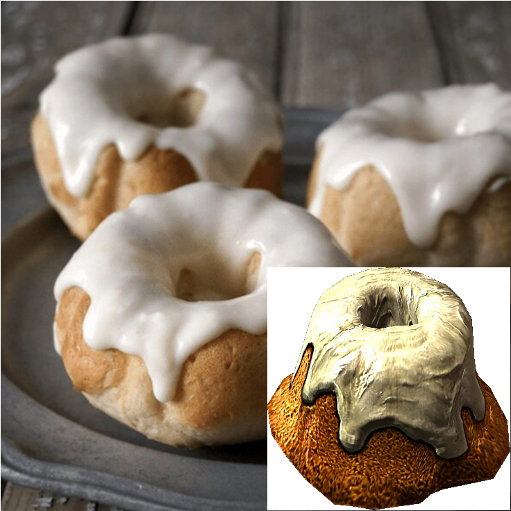

Sweet Roll

Description
A classic Skyrim pastry topped with sugary icing. Guard it well... or
someone might steal it.
Ingredients
- Flour
- Sugar
- Butter
- Milk
- Eggs
- Vanilla
Steps
- Preheat your oven to 375°F (190°C).
- Mix wet and dry ingredients separately, then combine.
- Pour batter into greased molds and bake for 20–25 minutes.
- Let cool, then drizzle icing on top.
Back to Skyrim Recipes